- 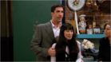s02e1- "The One With Ross' New Girlfriend"
Rachel gets an unpleasant surprise when Ross returns home. Phoebe has varied success when cutting her friends' hair!
- s02e2 - "The One With The Breast Milk" 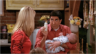
Monica goes shopping when Ross's new girlfriend and is too afraid to tell Rachel. Joey is troubled when a fellow after-shave salesman outperforms him on the job.
- s02e3 - "The One Where Heckles Dies"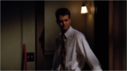
The downstairs neighbor dies and bequeaths his strange possessions to Monica and Rachel.
- s02e4 - "The One With Phoebe's Husband" 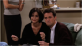
Everyone's surprised when Phoebe's husband shows up.
- s02e5 - "The One With Five Steaks And An Eggplant" 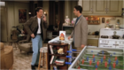
When planning a birthday party for Ross, the six discover money is an issue in life, even among friends.
- s02e6 - "The One With The Baby On The Bus" 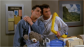
Joey and Chandler accidentally leave Ben on a bus while babysitting. Phoebe (whose Smelly Cat debuts here) gets fired from her Central Perk singing gig, and is replaced by a professional.
- s02e7 - "The One Where Ross Finds Out" 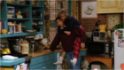
Dramatic developments occur in Ross and Rachel's relationship. Chandler regrets asking Monica to help him lose weight.
- s02e8 - "The One With The List" 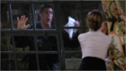
Rachel makes a painful discovery concerning Ross. Monica's new boss gives her an impossible task.
- s02e9 - "The One With Phoebe's Dad" 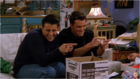
Phoebe learns the surprising truth about her father. Ross makes Monica's Christmas party guests miserable. Rachel gets her revenge on Ross.
- s02e10 - "The One With Russ" 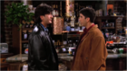
After some gentle person persuasion, Joey accepts a great acting job. Rachel dates a guy who looks amazingly like Ross.
- s02e11 - "The One With The Lesbian Wedding" 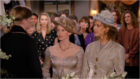
Carol and Susan prepare for their wedding with help from an uncomfortable Ross.
- s02e12 - "The One After The Superbowl, Part 1" 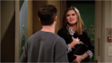
Ross goes to visit Marcel the Monkey in the San Diego Zoo and finds the simian is pursuing a show-biz career. Joey has a date with a deranged fan. Lembeck won a Best Director Emmy.
- s02e13 - "The One After The Superbowl, Part 2" 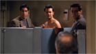
Rachel and Monica fight over Jean-Claude Van Damme. Chandler dates a girl he went to elementary school with, with a surprising outcome. Lembeck won a Best Director Emmy.
- s02e14 - "The One With The Prom Video" 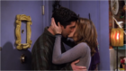
Monica's old home video elicits the true feelings Ross has for Rachel. Joey gives Chandler a gift.
- s02e15 - "The One Where Ross And Rachel... You Know" 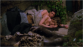
Ross and Rachel encounter romantic obstacles. Monica falls for a handsome older doctor. Chandler and Joey have new lazy chairs and do not want to get up from them.
- s02e16 - "The One Where Joey Moves Out" 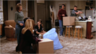
Chandler catches Joey licking a spoon and replacing it in the drawer, and a major fight ensues. Monica's parents find out about her new boyfriend.
- s02e17 - "The One Where Eddie Moves In" 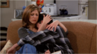
Joey and Chandler pine for each other but neither will admit it. Chandler gets a new roommate. A record company asks Phoebe to make a Smelly Cat music video.
- s02e18 - "The One Where Dr. Ramoray Dies" 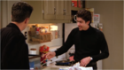
Joey's soap character looks set to be killed off after Joey makes some contentious remarks to a fan magazine. Monica and Richard have their first argument.
- s02e19 - "The One Where Eddie Won't Go" 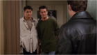
Chandler battles to get rid of his annoying new roommate and have Joey, who's feeling the crunch of unemployment and mounting debt, move back in. The girls discover a book on personal empowerment.
- s02e20 - "The One Where Old Yeller Dies" 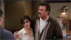
Impressionable Phoebe becomes depressed when it dawns on her that some movies don't end happily. Richard bonds with Chandler and Joey at a basketball game.
- s02e21 - "The One With The Bullies" 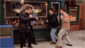
Chandler and Ross are intimidated by two bullies who take over the friends' Central Perk sofa. Phoebe meets her long-lost family.
- s02e22 - "The One With Two Parties" 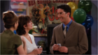
Rachel gets a real surprise when her parents show up at her birthday party.
- s02e23 - "The One With The Chicken Pox" 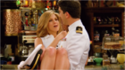
When Phoebe catches chicken pox, her chances for romance with an ex-love are nearly ruined. Rachel is intrigued by Phoebe's ex-love sailor suit wanting Ross to have one as well. Monica feels she may be too neurotic for straight-arrow Richard.
- s02e24 - "The One With Barry & Mindy's Wedding" 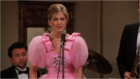
Rachel is a bridesmaid at her ex-fiance's wedding. Monica and Richard's relationship is jeopardized when the subject of children arises.